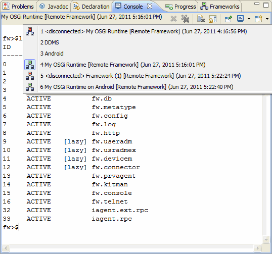

The Remote Console add-on to the Console view provides a command prompt-like interface for sending console commands to one or more OSGi frameworks.
 Figure 1: The Remote Console of mToolkit.
OSGi Management Overview